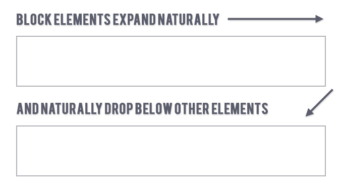
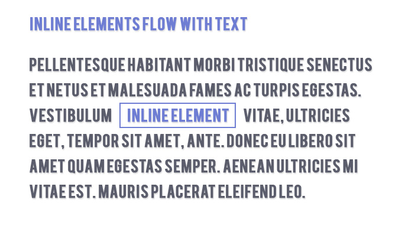

For the purpose of CSS styling, elements can be generally divided into a few different categories. Two of those categories are block-level elements and inline elements.
In my opinion, this is one of those areas that, once understood correctly, can help beginners to take their CSS skills to the next level.
Block-level Elements
A block element is an element that has, but may not be limited to, the following characteristics:
- If no width is set, will expand naturally to fill its parent container
- Can have margins and/or padding
- If no height is set, will expand naturally to fit its child elements (assuming they are not floated or positioned)
- By default, will be placed below previous elements in the markup (assuming no floats or positioning on surrounding elements)
- Ignores the
vertical-alignproperty
So, for a block element, it’s not necessary to give it a set width or to give it a width of 100% if you want it to fill its parent horizontally. In fact, doing either of those things may cause maintainability issues or other undesirable problems.
And, as the fourth item in the above list indicates, it’s also not necessary to “clear” a block element; assuming no floats are affecting the block element, it will be cleared automatically and will start on the next “line” in the page’s output.
Examples of Block Elements:
<p>, <div>, <form>, <header>, <nav>, <ul>, <li>, and <h1>.

Examples
Inline Elements
An inline element has, but may not be limited to, the following characteristics:
- Flows along with text content, thus
- Will not clear previous content to drop to the next line like block elements
- Is subject to white-space settings in CSS
- Will ignore top and bottom margin settings, but will apply left and right margins, and any padding
- Will ignore the
widthandheightproperties - If floated left or right, will automatically become a block-level element, subject to all block characteristics
- Is subject to the
vertical-alignproperty
The easiest way to picture an inline element is to think of it as a box that acts like text. What happens, for example, to text that’s not separated by other elements? It flows one letter after the other. If you put an inline element next to text, it will flow next to that text just like another piece of text.
Examples of Inline Elements:
<a>, <span>, <b>, <em>, <i>, <cite>, <mark>, and <code>.

Other Notes
You’ll notice that the examples of both block and inline elements are quite revealing: The block examples are structural elements, while the inline elements are text-based. This is an easy way to remember which is which, although at first you will sometimes be confused.
Generally speaking, you can put any block element inside another block element. You can also put any inline element inside a block element, as well as any inline element inside any other inline element. But you cannot put a block element inside an inline element — with (I believe) one exception: You can wrap an <a> element around any content, whether it be block eleemnts, or inline elements, or a mixure of both.
You have the option to change any block-level element to an inline element, and vice-versa, using the display property. So keep that in mind if you need to do this. But don’t use the wrong element for the wrong purpose. An SEO guy once told me to put an <h2> element inside of a paragraph, and style it to look like regular text, because he wanted an SEO boost. Not a good idea, that’s what <em> is for.
One final thing to note is that, although from a CSS perspective block and inline do exist, from an HTML5 perspective, the different types of elements have been re-categorized, so that they’re more specific. You can read about these content models in the WHATWG HTML5 spec.
Bonus Tip: Replaced Elements
At the beginning, I said that block and inline were just two types of content. Generally speaking, those are the two primary kinds, and you won’t have to worry too much about any other kinds.
But there are what are referred to as replaced elements. Basically, these are neither block nor inline. But you might classify them as something closer to inline, but with block-like structure.
I won’t provide a detailed explanation here; you can check out the SitePoint article linked in the previous paragraph for full details. But some examples of replaced elements include:
<img>, <object>, <input>, and <select>.
Conclusion
If you’re just starting out with CSS, understanding the behaviour of block vs. inline elements will go a long way to helping you code sites that are efficient and maintainable and don’t rely on overuse of floats or other undesirable methods.